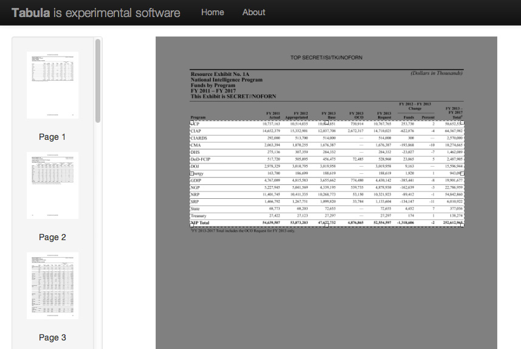

OK, so not truly open source. But this website is a fantastic resource for learning about data, statistics and comparisons.
It's basically Google for reliable data figures, and it's much smarter about the queries that you give it. Many of the data points that you might be inclined to consult Wikipedia for can be found much more reliably and sourced on Wolfram. And it does all the calculations for you.
The Pro account ($5/month) offers even more. On many of the data table results, you can turn them into charts that you can embed or save as images.
But you can still get lots of interesting data comparisons for free, and you can simply use the data from the site in your own charting. Click any underlined statistics to see the source of the data.
when did the Simpsons premiere?
Try clicking the Random button underneath the search box to get some recommendations.
This tool will help you liberate data tables from pdfs into spreadsheet form.
Many public records requests will result in a batch of scanned documents that contain data tables. This is not optimal for analyzing and storytelling with the data. This is where Tabula comes in.
The application runs in your browser, much like Open Refine does. Once you've submitted a pdf to use, all you need to do is draw a rectangle over the area of the data table in the pdf and it will hopefully output clean data for you.
Soundcite lets you easily embed audio inline into your text, like this. It provides a powerful storytelling option that can give voice to a quote or ambient noise to a scene.
If you're at a rally, I want to hear the crowd. If you're interviewing someone famous or someone with an interesting voice, ask to get the audio. Hearing a voice is a great way to connect the reader with your subject.
If the noise from a location you're reporting from is an important part of the story or would give more feeling, take one minute to capture a bit of clean audio that can be edited to sprinkle in your story. It can have a strong impact.
Create a Gist on bl.ocks.org (remember to name the Gist file index.html) using this clip of Obama's 2012 acceptance speech. Write a sentence of text in a <p> tag and insert the audio in a logical spot using the instructions on the Soundcite website.
Timeline JS is a great tool for building time-based interactives. And contrary to its name, you don't need to know JavaScript to be able to make really robust presentations using this tool.
Wolfram Alpha
Tabula: Exercise
Soundcite: Exercise
Timeline JS: Exercise
Homework
Let's take a look at some examples.
Make a timeline about the Syrian conflict using the dates in the document above. Use the different services supported by Timeline JS (Flickr, Google Maps, YouTube, Twitter, etc.) to add media and context to the timeline.
Make a timeline using Timeline JS. You have two story options:
Send me a link to your timeline before next class.